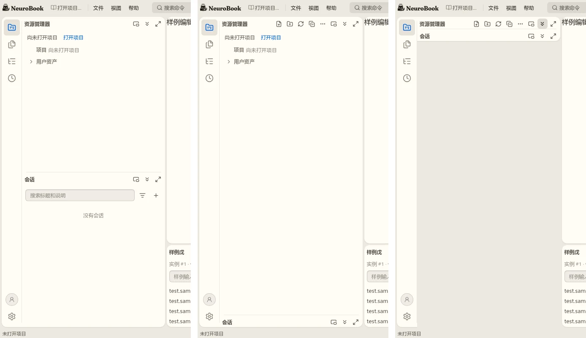
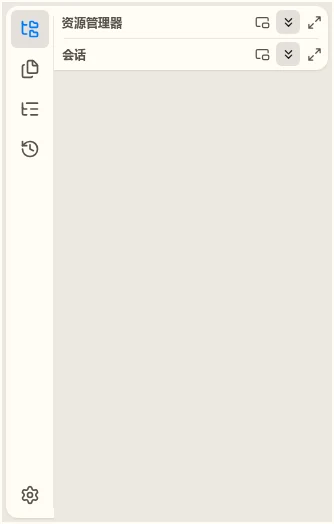
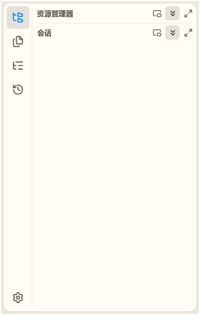
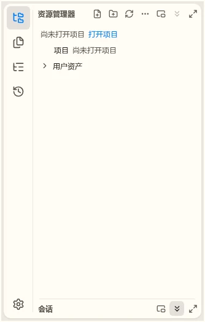
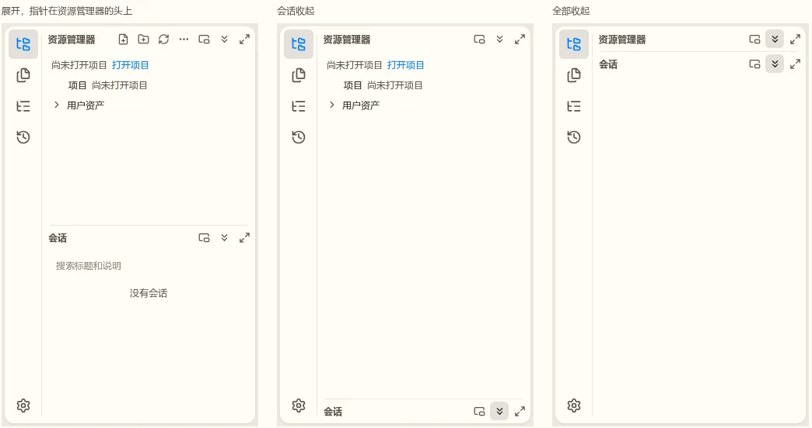
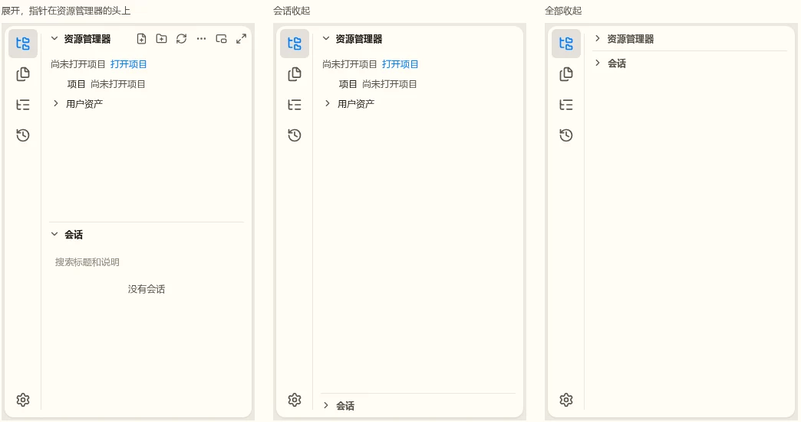
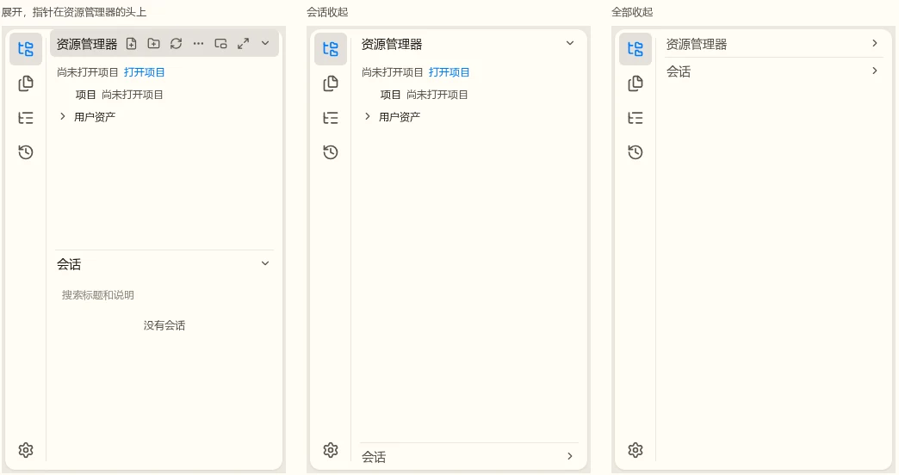
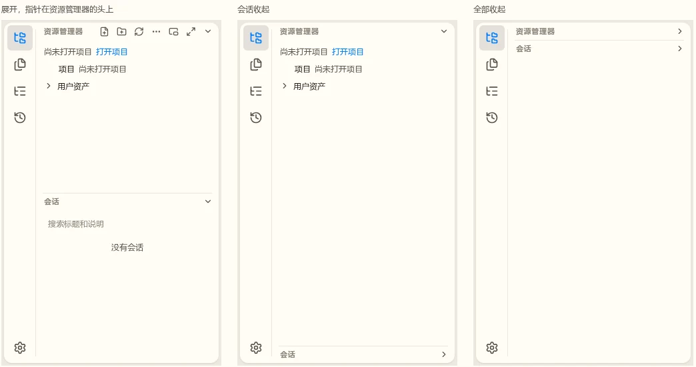

第 1 轮：分节全部收起与面板头
现状与参照

| 现状 | VS Code | |
|---|---|---|
| 全部收起 | 卡片缩成两行，下面露出窗体底，活动栏一直到底 | 标题行排在上面，下面是侧栏自己的底 |
| 头 | 32px；12px 粗体次要字色；浮动、收起、最大化常在 | 22px；左边展开标记；动作悬停才出 |
| 收起的行 | 和展开的头一样，只是收起按钮按下 | 标记朝右 |
| 点标题行 | 激活这一节，收着时展开 | 展开、收起来回切 |
一个容器的分节全部收起时，卡片怎么画？
推荐甲：卡片和活动栏照旧连成满高的一列，空出来的是卡片自己的底；收起的行排在上面，和 VS Code 一样。
现状

甲 卡片满高，标题行在上

乙 不许全部收起

只剩一节展开时，它的收起按钮停用。
面板头画成哪一种？
推荐甲：静止时只剩标记与标题，按钮悬停才出；收起、展开看标记的方向，不用再找哪个按钮按下了。
现状

甲 标记在左，按钮悬停才出

收起按钮拿掉，由标记与点标题行代替；浮动、最大化和视图动作一起悬停才出。收起的行标题退成次要字色。
乙 整行像列表行，标记在右

标题 13px 常规字重；悬停时整行一层淡底。
丙 紧凑小标题

头 26px，标题 11px 次要字色、略加字距，标记在右。
点分节的标题行做什么？
推荐甲：有了展开标记，整行就是开关，和 VS Code 一样；键盘在标题上按 Enter 同样切换，空格照旧拿起拖动。
甲 展开、收起来回切
展开着的点一下收起，收着的点一下展开；按钮上的点击不算。
乙 只展开（现状）
点标题激活这一节，收着时展开；收起只能用按钮或拖。
直接修，不用答
| 哪里 | 改成什么 |
|---|---|
| 头的高度 | 32px 不变：右栏、底部面板的入口条（t28）也是这一行高，并成一行的头要放得进去 |
| 底部面板的分节 | 照旧不折叠，头不画展开标记 |